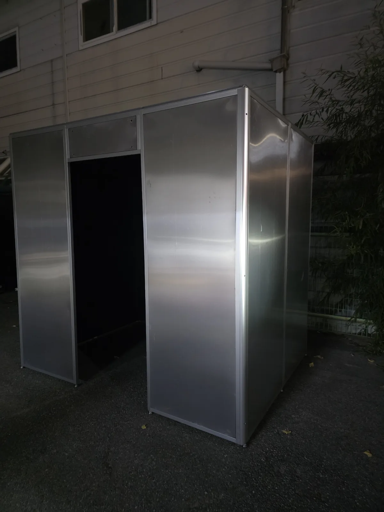

골목 안쪽 각도Night · Alley
주택가 이면도로 매장 앞, 차 한 대 겨우 지나가는 골목에 설치한 소형 스테인리스 부스 사례입니다. 넓은 공간이 없어도 로드샵 매장이라면 설치할 수 있다는 것을 보여준 현장입니다.

이 현장은 매장 출입구 옆 이면도로 자투리 공간에 부스를 앉힌 사례입니다. 뒤편 담장과 주택 사이 폭 좁은 자리라 설치 전부터 "이 자리에 들어가긴 하나" 하는 질문을 가장 먼저 받았습니다. 스테인리스 마감 패널을 현장 실측에 맞춰 제작해, 차량 통행이 겨우 가능한 골목 폭에도 여유 있게 들어가는 사이즈로 구성했습니다.
골목 상권·로드샵 포토부스 렌탈을 문의하시는 분들이 가장 먼저 걱정하는 것이 설치 면적입니다. 이 현장은 매장 앞이 아니라 건물 옆 좁은 통로였고, 전기 인입과 배수 동선까지 고려해 부스 위치를 잡아야 했습니다. 밤에는 스테인리스 패널이 가로등과 실내 조명을 반사해, 좁은 골목 안에서도 부스 자체가 은은하게 눈에 띕니다.
다른 설치 사례 보기
도면만으로는 알 수 없는 배관·계량기·경사 등을 현장 실측으로 먼저 확인했습니다. 골목·이면도로는 도로와 사유지 경계가 애매한 경우가 많아 설치 전 확인이 특히 중요합니다.
무광이 아닌 헤어라인 스테인리스 마감을 선택해, 가로등이 없는 골목에서도 주변 빛을 반사해 부스 위치가 자연스럽게 눈에 들어오도록 했습니다.
실내가 아닌 통로형 부지라 전원 인입 거리와 우수관 위치를 먼저 점검한 뒤 부스 위치를 확정했습니다.
사람이 상주하지 않는 골목 안쪽이라, 무인 결제·원격 모니터링 구성으로 야간에도 문제 없이 운영되도록 세팅했습니다.
현장 실측을 먼저 진행해 실제 통행·회전 반경을 확인한 뒤, 그 공간에 맞는 사이즈로 부스를 제작하거나 기존 사양 중 맞는 모델을 제안해 드립니다.
가능합니다. 다만 도로 폭, 통행 동선, 사유지 경계를 사전에 확인해야 하므로 반드시 현장 답사를 거칩니다.
기존 매장 전원을 연결하는 방식이 일반적이며, 인입 거리가 멀 경우 별도 배선 공사 여부를 사전 답사에서 안내해 드립니다.
네. 무인 결제와 원격 모니터링을 기본으로 구성해, 관리자가 상주하지 않는 시간에도 정상 운영됩니다.
실내 안내 음성 볼륨과 외부 조명 밝기를 주변 환경에 맞춰 조정할 수 있습니다. 설치 전 상담 시 현장 조건을 함께 확인합니다.